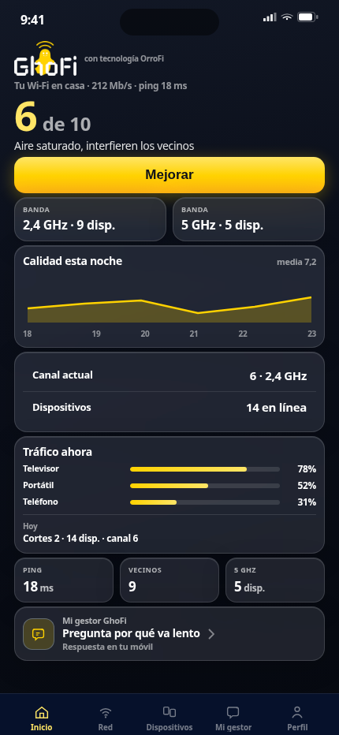
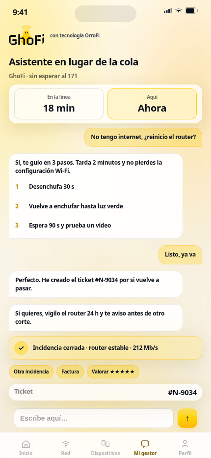
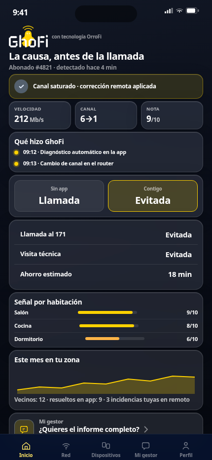

Ваши абоненты довольны. Ваша поддержка обходится дешевле.
Приложение выходит под вашим брендом: ваш логотип, ваши цвета, ваше название в App Store и Google Play. Абонент видит только вас, OrroFi остаётся за кадром.
OrroFi — готовое приложение под вашим брендом. Оно делает домашний интернет ваших клиентов лучше, а разговор с вами — простым, быстрым и человечным.


Прямой канал к клиенту
Сегодня между оператором и абонентом стоят очередь на линии, письма, которые никто не читает, и SMS, которые теряются среди рекламы. OrroFi убирает эту стену. Ваш бренд живёт в телефоне клиента, и любое важное сообщение доходит сразу: авария на линии и срок её устранения, плановые работы, визит техника, новый счёт.

Помощник вместо очереди на линии
Mi gestor знает договор клиента, его услуги и состояние его домашней сети. Поэтому он отвечает не заученными фразами, а по существу, днём и ночью, за секунды. Когда вопрос требует человека, помощник передаёт разговор вашему сотруднику вместе со всей историей, и клиенту не приходится повторять всё заново.

Мобильная связь и домашний интернет в одном окне
Ваш абонент видит домашний Wi‑Fi, мобильные линии семьи, пакеты и счета в одном приложении под вашим брендом. Когда у человека всё в одном месте, он реже звонит в поддержку и реже уходит к конкуренту.
Помощник понимает, где именно проблема, дома или в мобильной сети, и решает её до звонка в поддержку. Если у абонента заканчиваются гигабайты, он предложит пакет ровно в тот момент, когда это нужно, без навязчивой рекламы. А небольшому оператору, у которого своего приложения нет, OrroFi с первого дня даёт полноценное мобильное приложение, не хуже, чем у крупных.

Меньше звонков, выездов и ушедших клиентов
Большинство жалоб на «плохой интернет» на деле означает тесный эфир в доме клиента. OrroFi находит причину и устраняет её раньше, чем абонент возьмётся за телефон. Меньше звонков в колл‑центр, меньше напрасных выездов техников. А главное, меньше клиентов, которые уходят к конкуренту просто потому, что «вечером всё тормозит».

Продажи по делу
Приложение видит, когда клиенту действительно нужно больше: пакет данных, тариф побыстрее, усилитель сигнала в дальнюю комнату. Предложение приходит в нужный момент и воспринимается как помощь, а не как реклама. А программа «Пригласи друга» превращает довольных абонентов в ваших лучших продавцов.

Готовое приложение под вашим брендом
Вам не нужна своя команда разработчиков и годы работы. OrroFi приходит с вашим именем и цветами, с приложением для iPhone и Android, веб‑кабинетом и панелью для сотрудников. Данные клиентов защищены по европейским правилам, а сведения об их домашних устройствах вообще не покидают телефон.

Как подключиться
- Расскажите нам о своей сети и абонентах.
- Мы подключаем OrroFi к вашим системам и оформляем приложение под ваш бренд.
- Ваши абоненты устанавливают приложение, а вы видите результат.